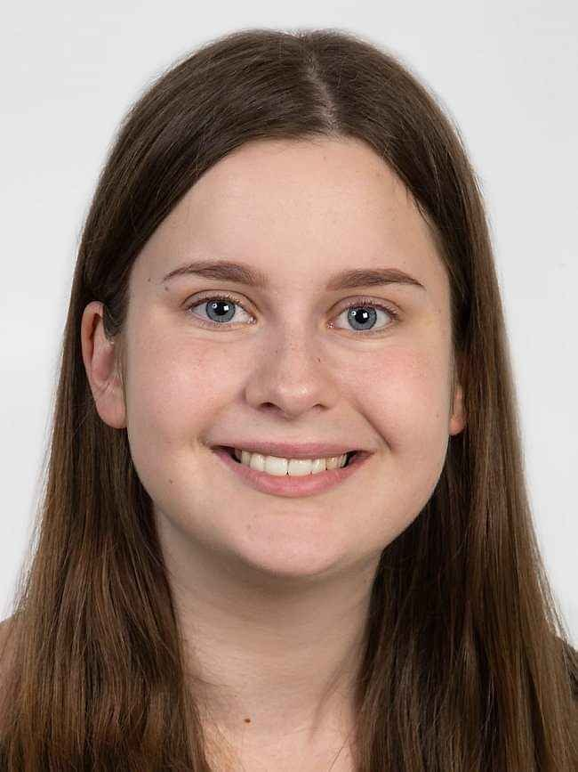

Date of birth: 11.12.1997
Nationality: Icelandic
Gender: Female
Email: birtahakonar@gmail.com
About me: I am a student majoring in Industrial Engineering at the University of Iceland applying for a master's program. While studying I spent 2 years with the university's Formula Student Team designing and building the car chassis. During this time I discovered my interest in designing and the manufacturing process.
Work experience
Workshop employee - Veitur ohf.
01.05.2019 – Current – Reykjavík, Iceland
Veitur is the biggest utility company in Iceland. The company provides an important service for the public and ensures that users have continuous access to hot water, electricity, water and wastewater systems. My work in the machine shop was focused on hot water. The job involves finding and crafting specialised solutions for all kinds of problems, ranging from fixing leaking pipes to the installation of a pump in a geothermal well.
Hotel Receptionist - Hótel Smyrlabjörg
01.03.2018 – 01.08.2018 – Höfn, Iceland
The Hotel receptionist is responsible for providing a friendly, welcoming and efficient service to all hotel guests. The main tasks are receiving guests, and to ensure a comfortable and pleasant stay, providing information, overseeing the booking system of hotel rooms and dining reservations and the billing of guests.
Housekeeper and Night Porter - Hótel Klaustur
01.05.2015 – 28.02.2018 – Kirkjubæjarklaustur, Iceland
A night porter is a porter who is on duty during the night. The night porter attends to the need of guests and other incidents during the night as well as preparing and serving breakfast for the guests. The housekeeper ensures that all hotel rooms are cared for and inspected according to the hotel standards. This involves performing a variety of cleaning activities, such as sweeping, mopping, dusting and polishing.
Education and training
Bachelor degree in Industrial engineering - University of Iceland
01.08.2018 – Current – Reykjavík, Iceland
I am schedualed to graduate in the spring 2021
Upper Secondary Studies - Menntaskólinn við Hamrahlíð
01.08.2013 – 01.05.2017 – Hamrahlíð 10, Reykjavík, Iceland
Language skills
Mother tongue(s) Icelandic
Other languages: English (C1) and Danish (A2)
Basic Autocad, Autocad Inventor, Basic Ansys, Python programming language, Java programming language, Basic MATLAB, Latax software, R programming, Some knowledge of C/C++
Digital skills